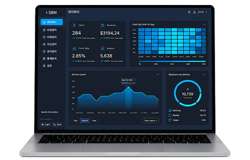
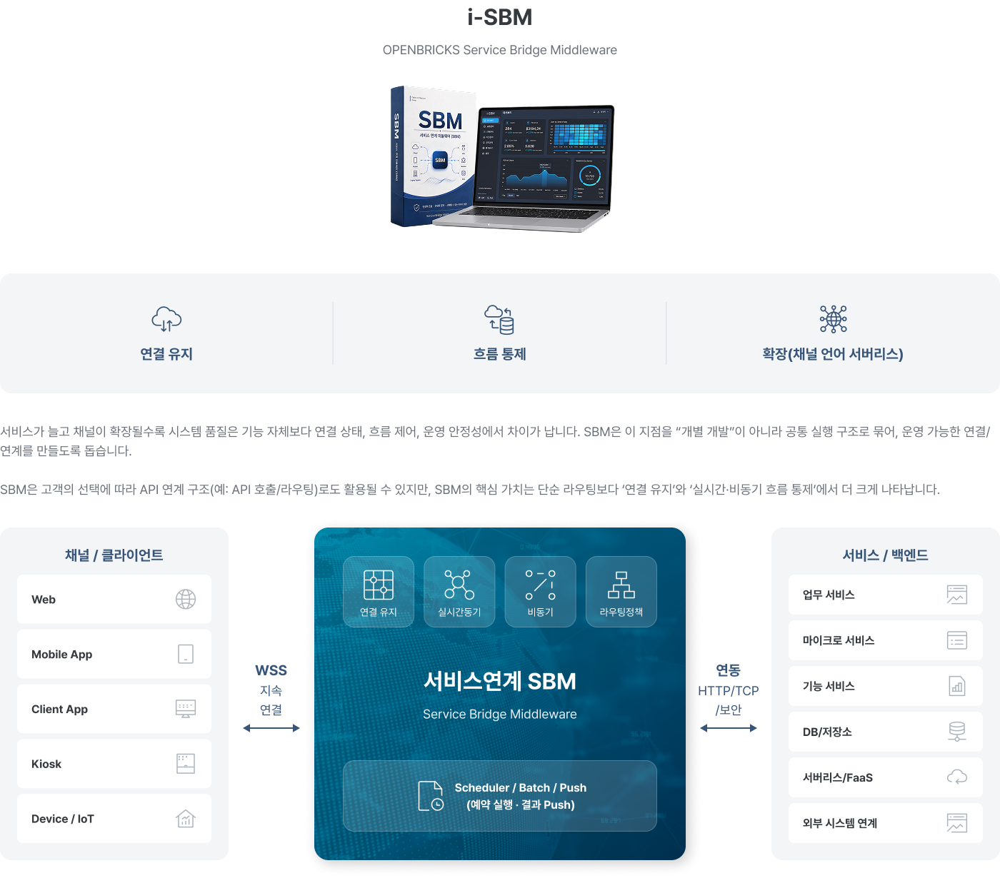
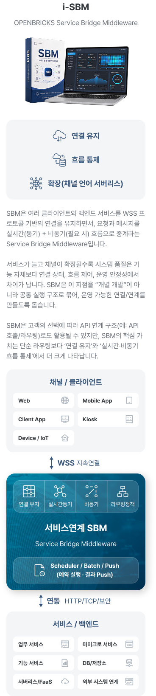
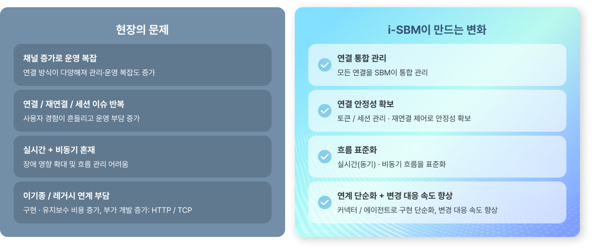
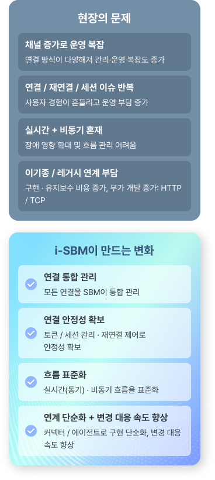

i-SBM
유연한 시스템 연계와
완벽한 데이터 흐름을 위한 i-SBM
i-SBM은 여러 클라이언트와 백엔드 서비스를 WSS 프로토콜 기반의 연결을 유지하면서,
요청과 메시지를 실시간(동기) + 비동기(필요 시) 흐름으로 중계하는 Service Bridge Middleware입니다.
서비스 연계 SBM이란?
SBM은 여러 클라이언트와 백엔드 서비스를 WSS 프로토콜 기반의 연결을 유지하면서, 요청과 메시지를 실시간(동기) + 비동기(필요 시) 흐름으로 중계하는 Service Bridge Middleware입니다.


i-SBM은 시스템에서 어떤 역할을 하나요?
SBM은 채널/클라이언트(웹·앱·키오스크·디바이스·클라이언트 앱)와 백엔드 서비스/기능
서비스/외부 연계 사이에 위치합니다.

i-SBM은 “요청을 통과시키는 통로”라기보다,
연결이 끊기지 않게 유지하고, 실시간·비동기 흐름이
운영 가능한 방식으로 흘러가도록 만드는 허브에 가깝습니다.
-
01
채널/클라이언트의 SBM 연결(주로 WSS)
-
02
SBM의 연결 상태 관리 및 요청/이벤트 전달
-
03
커넥터(또는 레거시 에이전트)를 통한 서비스 연동 및 흐름 처리
Why i-SBM
왜 i-SBM이 필요할까요?
시스템이 커질수록 문제가 생기는 지점은 대개 “연결과 운영”입니다.


SBM는 연결과 흐름을 공통 구조로 통합해 표준화된 실행 구조로
제공함으로써 운영 복잡도를 줄이고 서비스 품질을 높입니다.
인증/통제 · 프로토콜 · 구성/운영 전제
-
인증/통제 방식
WSS 연결은 토큰 기반으로 통제 커넥터가 발급한 토큰을 SBM이 검증하여 연결을 승인/관리 연결 자체를 운영 정책에 따라 제어 가능
-
프로토콜 지원
Primary: WSS (핵심, 지속 연결/실시간 중심) Secondary: HTTP, TCP (부분 지원/특정 시나리오 보완)
-
구성/운영 전제
Redis (필수): 연결 흐름 관리, 연결 커넥터 정보 저장, 스케줄러 관리 MongoDB (필수, RDB 대체 가능): 로그 데이터, 서비스 및 클라이언트 저장 데이터
SBM 기반 운영 안정성의 차이
SBM은 단순 연결을 넘어, 인프라 구조를 개선해 운영 품질을 안정적으로 유지하며,
장애 발생 시에도 빠르게 인지·통제 가능한 구조를 지향합니다.

SBM은 단순한 연결 도구를 넘어 인프라 전반의
구조적 혁신을 통해 운영 품질을 일정하게 유지함으로써,
기존 방식과는 확연히 다른 본질적인 차이를 만듭니다.
-
01
연결 안정성
세션 관리와 재연결 제어를 통해 채널 확장 시에도 흔들림 없는 연결성 확보
-
02
흐름 안정성
타임아웃 및 재시도 규칙의 흐름 반영을 통한 실시간·비동기 혼합 환경의 일관된 흐름 구현
-
03
장애 통제
라우팅 통제로 장애 확산을 방지하고 표준 구조기반의 빠른 변경 대응 실현
-
04
운영 가시성
처리 흐름 및 로그 모니터링을 통한 신속한 장애 원인 파악과 품질 향상
i-SBM Features
i-SBM의 핵심 기능
다양한 채널·언어·프로토콜·서브리스를 운영 가능한 연결 구조로 묶습니다.
-
Feature 01
연결 유지(토큰/클라이언트 관리)
WSS 기반 지속 연결 관리 토큰 인증 / 세션 관리 재연결 흐름 통제 채널/클라이언트별 패턴 고려 다중화 서비스 트래픽 분배/span> -
Feature 02
실시간(동기) + 비동기 흐름 중계
실시간 요청/응답 처리 비동기 메시지/이벤트 흐름 지연/재처리/순서 스케줄러 배치 실행 및 Push -
Feature 03
이기종 환경 연계 단순화
(채널·언어·서버리스 확장)Backend Connector (SDK): Java / .NET / Node.js / Go Frontend Connector: WebAssembly 기반 Legacy Agent (HTTP Proxy) Serverless 연계 지원 -
Feature 04
스케줄러 / 배치 / Push
특정 시각/간격 배치 실행 작업 결과 Push 제공 운영 자동화에 연계
-
인증 / 통제 방식
-
Connector
토큰 발급
-
SBM
토큰 검증
-
연결 승인/관리
정책/구현 통제
-
-
프로토콜 지원
-
Primary
WSS
핵심, 지속 연결/실시간 중심
-
Secondary
HTTP, TCP
부분 지원
-
i-SBM 적용 시나리오
-
다채널 서비스 확장
웹/앱/키오스크/디바이스가 동시에 붙는 환경에서 연결/흐름을 표준화
-
실시간 + 비동기 혼합 업무
즉시 처리와 순차 처리가 공존하는 흐름을 운영 가능한 구조로 구성
-
이기종/레거시 연계
서로 다른 언어/구조의 서비스들을 커넥터/에이전트로 연결
-
서비스 단위 확장
기능을 서비스/서버리스 단위로 추가·교체하기 쉬운 연결 기반
-
배치관리
스케줄러 방식의 배치 실행 및 작업 결과에 따른 Push 기능
i-SBM 기반 운영 기대 효과
i-SBM은 채널·서비스·외부 시스템 간 흐름을 통합 관리하여 운영 효율을 높이고, 실시간 연계 환경에서도 안정적인 서비스 제공이 가능합니다.
검증된 자체 운영 솔루션 i-SBM 기반으로
비즈니스 확장성과 지속 가능한 운영 환경을 제공합니다.
-
01
채널/클라이언트 확장에도 흔들리지 않는 연결 안정성 확보
-
02
실시간/비동기 혼합 환경에서 운영 가능한 흐름 표준화
-
03
이기종(다양한 언어/레거시) 환경의 연계 구현·유지보수 부담 감소
-
04
변경 대응 속도 향상(연결 구조/정책/흐름을 기준으로 대응)
-
05
로그/이력 기반 운영으로 장애 진단/대응 품질 향상
Beyond Systems,
We Connect Business
오픈브릭스는 AX 기반 시스템 통합으로
시스템을 넘어, 비즈니스를 연결합니다.